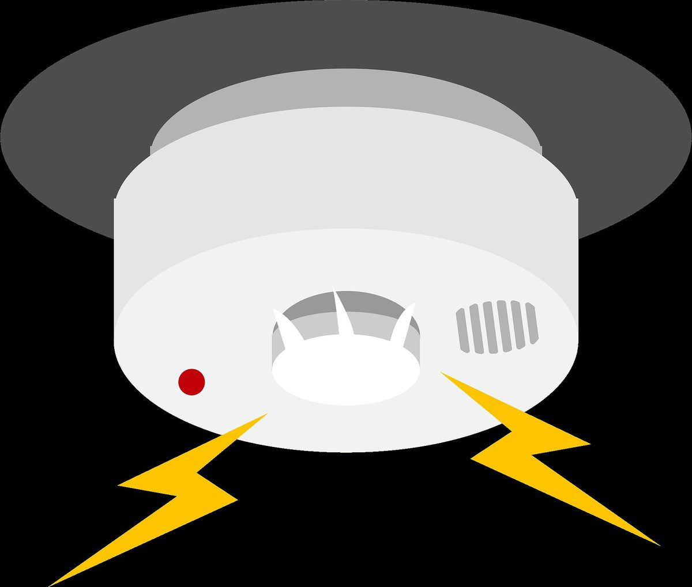

¿Por qué hacemos la detección del cáncer de seno?
- La detección se refiere a las pruebas de imagen utilizadas para detectar el cáncer de mama en personas que no presentan síntomas.
- La detección del cáncer de seno utiliza pruebas de imagen como la mamografía, la resonancia magnética y la ecografía para buscar el cáncer en una etapa temprana
- Detectar el cáncer a tiempo significa que es más pequeño y más fácil de tratar.
¡Piense en ello como un detector de humo que le avisa de un incendio en etapa temprana!
